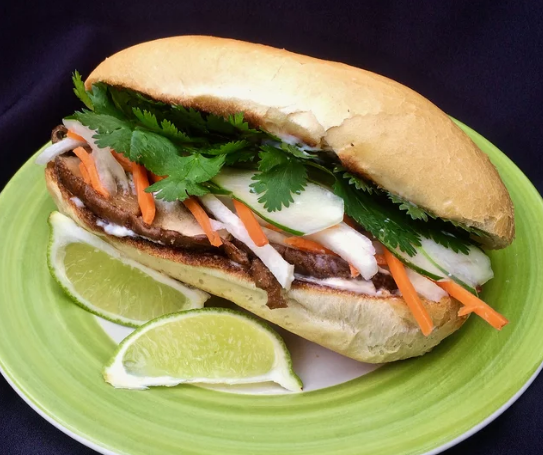

Vegetable Bahn Mi

A quick summer lunch waiting to be eaten
What could be better than a bahn mi on the go?
Ingredients
- Split Baguette
- matchstick-cut carrots
- thinly sliced onions
- white sugar
- fish sauce
- soy sauce
- portobello mushrooms
- thinly sliced cucumber
- sliced jalapeno pepper
Steps
- Combime carrots and onions in a small bowl
- Whisk sugar, water, soy sauce, and fish sauce into a small bowl
- Heat liquid and cook portobello mushrooms in liquid
- place cooked mushrooms and carrots and onions on bread
- Hopefully eat before you get where you are going